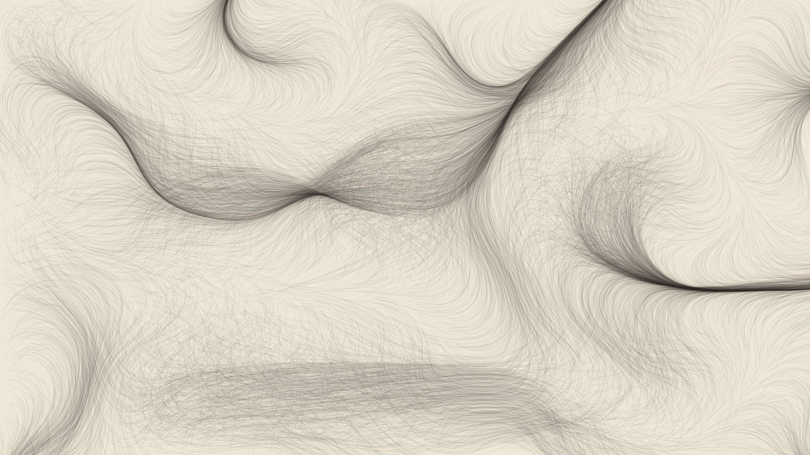

Shan Shui
Endless Chinese ink landscape, slowly unrolling like a handscroll. Every screen shows a different painting.
Web-based screensavers for the macOS lock screen. Install WebViewScreenSaver, then paste one of these URLs into its options. Setup steps are in the README.
Endless Chinese ink landscape, slowly unrolling like a handscroll. Every screen shows a different painting.
